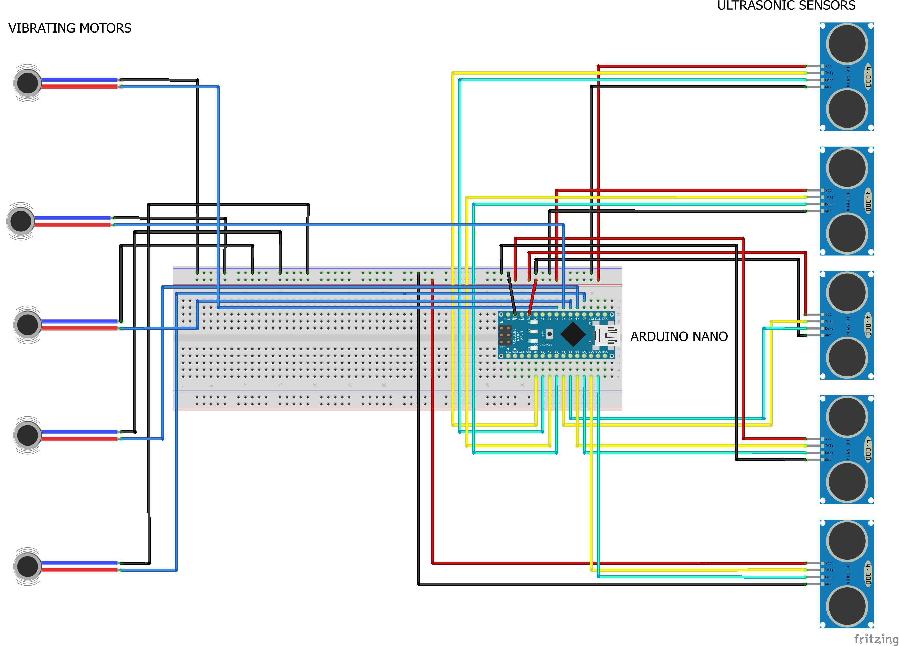
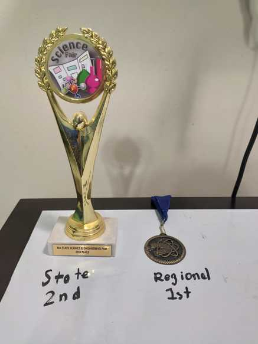

Detecting the Enviorment for Visually Impaired Indivisuals
There are over 285 million people who suffer from some type of visual impairment. They struggle to do normal everyday activities due to their limitations with sensing their surroundings. If there was a hands free navigation system that helps visually impaired people have an idea of their surroundings and avoid dangerous obstacles, that can help them with their daily activities. The device would work through the use of multiple ultrasonic sensors and vibration motors that alert the owner if an object is in front of them.
Goal
To create a device that will use multiple ultrasonic sensors that will be placed around the body at head, knee and chest level to help visually impaired individuals identify their surroundings and avoid hazard such as protruding boards or overhanging signs.
Fritzing Diagram
 To create the diagram, I used Fritzing, a peice of software that allows users to create simple drawings that show the pin-outs for the various components
 I created a circuit that made use of 5 ultrasonic sensors around the body. Each of these sensors was paired with a vibration motor. Whenever an object was detected 3 feet in-front of the sensor, the vibration motor would vibrate that section of the user's body in which the object was.
I created a circuit that made use of 5 ultrasonic sensors around the body. Each of these sensors was paired with a vibration motor. Whenever an object was detected 3 feet in-front of the sensor, the vibration motor would vibrate that section of the user's body in which the object was.
In this GIF, the ultrasonic sensor reacts to my hand moving infront of it. The small black dot above is the vibration motor which powers on when an object is detected. I added the LED for this demo so its easier to see its functionality.
Parts used:
1. 5x HC-5R04 Ultrasnoic Sensor
2. 5x Vibrating Motors ROB-08449
3. Arduino Nano
4. 34x Female to Male Wires
5. Velcro Strips
These sensors gave values to a microprocessor called an Arduino Nano. The Arduino Nano is like a small computer capable of receiving data from external hardware which helps it learn and make judements about its surrounding environment. I sewed the Ulrasonic sensors to the Velcro and strapped it on to my body.

Recognition
1st place at Worceter Regional Science and Engineering Fair2nd place at Massachussets Science and Engineering Fair.